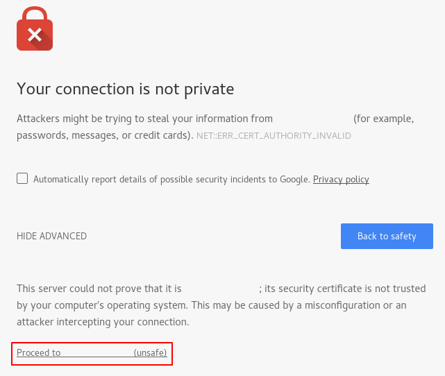

Tutorial
How To Create a Self-Signed SSL Certificate for Apache in Ubuntu 16.04
Introduction
TLS, or transport layer security, and its predecessor SSL, which stands for secure sockets layer, are web protocols used to wrap normal traffic in a protected, encrypted wrapper.
Using this technology, servers can send traffic safely between the server and clients without the possibility of the messages being intercepted by outside parties. The certificate system also assists users in verifying the identity of the sites that they are connecting with.
In this guide, we will show you how to set up a self-signed SSL certificate for use with an Apache web server on an Ubuntu 16.04 server.
Note: A self-signed certificate will encrypt communication between your server and any clients. However, because it is not signed by any of the trusted certificate authorities included with web browsers, users cannot use the certificate to validate the identity of your server automatically.
A self-signed certificate may be appropriate if you do not have a domain name associated with your server and for instances where the encrypted web interface is not user-facing. If you do have a domain name, in many cases it is better to use a CA-signed certificate. You can find out how to set up a free trusted certificate with the Let’s Encrypt project here.
Prerequisites
Before you begin, you should have a non-root user configured with sudo privileges. You can learn how to set up such a user account by following our initial server setup for Ubuntu 16.04.
You will also need to have the Apache web server installed. If you would like to install an entire LAMP (Linux, Apache, MySQL, PHP) stack on your server, you can follow our guide on setting up LAMP on Ubuntu 16.04. If you just want the Apache web server, skip the steps pertaining to PHP and MySQL in the guide.
When you have completed the prerequisites, continue below.
Step 1: Create the SSL Certificate
TLS/SSL works by using a combination of a public certificate and a private key. The SSL key is kept secret on the server. It is used to encrypt content sent to clients. The SSL certificate is publicly shared with anyone requesting the content. It can be used to decrypt the content signed by the associated SSL key.
We can create a self-signed key and certificate pair with OpenSSL in a single command:
You will be asked a series of questions. Before we go over that, let’s take a look at what is happening in the command we are issuing:
- openssl: This is the basic command line tool for creating and managing OpenSSL certificates, keys, and other files.
- req: This subcommand specifies that we want to use X.509 certificate signing request (CSR) management. The “X.509” is a public key infrastructure standard that SSL and TLS adheres to for its key and certificate management. We want to create a new X.509 cert, so we are using this subcommand.
- -x509: This further modifies the previous subcommand by telling the utility that we want to make a self-signed certificate instead of generating a certificate signing request, as would normally happen.
- -nodes: This tells OpenSSL to skip the option to secure our certificate with a passphrase. We need Apache to be able to read the file, without user intervention, when the server starts up. A passphrase would prevent this from happening because we would have to enter it after every restart.
- -days 365: This option sets the length of time that the certificate will be considered valid. We set it for one year here.
- -newkey rsa:2048: This specifies that we want to generate a new certificate and a new key at the same time. We did not create the key that is required to sign the certificate in a previous step, so we need to create it along with the certificate. The
rsa:2048portion tells it to make an RSA key that is 2048 bits long. - -keyout: This line tells OpenSSL where to place the generated private key file that we are creating.
- -out: This tells OpenSSL where to place the certificate that we are creating.
As we stated above, these options will create both a key file and a certificate. We will be asked a few questions about our server in order to embed the information correctly in the certificate.
Fill out the prompts appropriately. The most important line is the one that requests the Common Name (e.g. server FQDN or YOUR name). You need to enter the domain name associated with your server or, more likely, your server’s public IP address.
The entirety of the prompts will look something like this:
OutputCountry Name (2 letter code) [AU]:US
State or Province Name (full name) [Some-State]:New York
Locality Name (eg, city) []:New York City
Organization Name (eg, company) [Internet Widgits Pty Ltd]:Bouncy Castles, Inc.
Organizational Unit Name (eg, section) []:Ministry of Water Slides
Common Name (e.g. server FQDN or YOUR name) []:server_IP_address
Email Address []:admin@your_domain.com
Both of the files you created will be placed in the appropriate subdirectories of the /etc/ssl directory.
While we are using OpenSSL, we should also create a strong Diffie-Hellman group, which is used in negotiating Perfect Forward Secrecy with clients.
We can do this by typing:
This may take a few minutes, but when it’s done you will have a strong DH group at /etc/ssl/certs/dhparam.pem that we can use in our configuration.
Step 2: Configure Apache to Use SSL
We have created our key and certificate files under the /etc/ssl directory. Now we just need to modify our Apache configuration to take advantage of these.
We will make a few adjustments to our configuration:
- We will create a configuration snippet to specify strong default SSL settings.
- We will modify the included SSL Apache Virtual Host file to point to our generated SSL certificates.
- (Recommended) We will modify the unencrypted Virtual Host file to automatically redirect requests to the encrypted Virtual Host.
When we are finished, we should have a secure SSL configuration.
Create an Apache Configuration Snippet with Strong Encryption Settings
First, we will create an Apache configuration snippet to define some SSL settings. This will set Apache up with a strong SSL cipher suite and enable some advanced features that will help keep our server secure. The parameters we will set can be used by any Virtual Hosts enabling SSL.
Create a new snippet in the /etc/apache2/conf-available directory. We will name the file ssl-params.conf to make its purpose clear:
To set up Apache SSL securely, we will be using the recommendations by Remy van Elst on the Cipherli.st site. This site is designed to provide easy-to-consume encryption settings for popular software. You can read more about his decisions regarding the Apache choices here.
The suggested settings on the site linked to above offer strong security. Sometimes, this comes at the cost of greater client compatibility. If you need to support older clients, there is an alternative list that can be accessed by clicking the link on the page labelled “Yes, give me a ciphersuite that works with legacy / old software.” That list can be substituted for the items copied below.
The choice of which config you use will depend largely on what you need to support. They both will provide great security.
For our purposes, we can copy the provided settings in their entirety. We will just make two small changes.
Set the SSLOpenSSLConfCmd DHParameters directive to point to the Diffie-Hellman file we generated earlier. Also, take a moment to read up on HTTP Strict Transport Security, or HSTS, and specifically about the “preload” functionality. Preloading HSTS provides increased security, but can have far reaching consequences if accidentally enabled or enabled incorrectly. In this guide, we will not preload the settings, but you can modify that if you are sure you understand the implications:
Save and close the file when you are finished.
Modify the Default Apache SSL Virtual Host File
Next, let’s modify /etc/apache2/sites-available/default-ssl.conf, the default Apache SSL Virtual Host file. If you are using a different server block file, substitute it’s name in the commands below.
Before we go any further, let’s back up the original SSL Virtual Host file:
Now, open the SSL Virtual Host file to make adjustments:
Inside, with most of the comments removed, the Virtual Host file should look something like this by default:
We will be making some minor adjustments to the file. We will set the normal things we’d want to adjust in a Virtual Host file (ServerAdmin email address, ServerName, etc.), adjust the SSL directives to point to our certificate and key files, and uncomment one section that provides compatibility for older browsers.
After making these changes, your server block should look similar to this:
Save and close the file when you are finished.
(Recommended) Modify the Unencrypted Virtual Host File to Redirect to HTTPS
As it stands now, the server will provide both unencrypted HTTP and encrypted HTTPS traffic. For better security, it is recommended in most cases to redirect HTTP to HTTPS automatically. If you do not want or need this functionality, you can safely skip this section.
To adjust the unencrypted Virtual Host file to redirect all traffic to be SSL encrypted, we can open the /etc/apache2/sites-available/000-default.conf file:
Inside, within the VirtualHost configuration blocks, we just need to add a Redirect directive, pointing all traffic to the SSL version of the site:
Save and close the file when you are finished.
Step 3: Adjust the Firewall
If you have the ufw firewall enabled, as recommended by the prerequisite guides, might need to adjust the settings to allow for SSL traffic. Luckily, Apache registers a few profiles with ufw upon installation.
We can see the available profiles by typing:
You should see a list like this:
OutputAvailable applications:
Apache
Apache Full
Apache Secure
OpenSSH
You can see the current setting by typing:
If you allowed only regular HTTP traffic earlier, your output might look like this:
OutputStatus: active
To Action From
-- ------ ----
OpenSSH ALLOW Anywhere
Apache ALLOW Anywhere
OpenSSH (v6) ALLOW Anywhere (v6)
Apache (v6) ALLOW Anywhere (v6)
To additionally let in HTTPS traffic, we can allow the “Apache Full” profile and then delete the redundant “Apache” profile allowance:
Your status should look like this now:
OutputStatus: active
To Action From
-- ------ ----
OpenSSH ALLOW Anywhere
Apache Full ALLOW Anywhere
OpenSSH (v6) ALLOW Anywhere (v6)
Apache Full (v6) ALLOW Anywhere (v6)
Step 4: Enable the Changes in Apache
Now that we’ve made our changes and adjusted our firewall, we can enable the SSL and headers modules in Apache, enable our SSL-ready Virtual Host, and restart Apache.
We can enable mod_ssl, the Apache SSL module, and mod_headers, needed by some of the settings in our SSL snippet, with the a2enmod command:
Next, we can enable our SSL Virtual Host with the a2ensite command:
We will also need to enable our ssl-params.conf file, to read in the values we set:
At this point, our site and the necessary modules are enabled. We should check to make sure that there are no syntax errors in our files. We can do this by typing:
If everything is successful, you will get a result that looks like this:
OutputAH00558: apache2: Could not reliably determine the server's fully qualified domain name, using 127.0.1.1. Set the 'ServerName' directive globally to suppress this message
Syntax OK
The first line is just a message telling you that the ServerName directive is not set globally. If you want to get rid of that message, you can set ServerName to your server’s domain name or IP address in /etc/apache2/apache2.conf. This is optional as the message will do no harm.
If your output has Syntax OK in it, your configuration file has no syntax errors. We can safely restart Apache to implement our changes:
Step 5: Test Encryption
Now, we’re ready to test our SSL server.
Open your web browser and type https:// followed by your server’s domain name or IP into the address bar:
https://server_domain_or_IP
Because the certificate we created isn’t signed by one of your browser’s trusted certificate authorities, you will likely see a scary looking warning like the one below:

This is expected and normal. We are only interested in the encryption aspect of our certificate, not the third party validation of our host’s authenticity. Click “ADVANCED” and then the link provided to proceed to your host anyways:

You should be taken to your site. If you look in the browser address bar, you will see a lock with an “x” over it. In this case, this just means that the certificate cannot be validated. It is still encrypting your connection.
If you configured Apache to redirect HTTP to HTTPS, you can also check whether the redirect functions correctly:
http://server_domain_or_IP
If this results in the same icon, this means that your redirect worked correctly.
Step 6: Change to a Permanent Redirect
If your redirect worked correctly and you are sure you want to allow only encrypted traffic, you should modify the unencrypted Apache Virtual Host again to make the redirect permanent.
Open your server block configuration file again:
Find the Redirect line we added earlier. Add permanent to that line, which changes the redirect from a 302 temporary redirect to a 301 permanent redirect:
Save and close the file.
Check your configuration for syntax errors:
When you’re ready, restart Apache to make the redirect permanent:
Conclusion
You have configured your Apache server to use strong encryption for client connections. This will allow you serve requests securely, and will prevent outside parties from reading your traffic.
71 Comments
Load-
TrevorLaneRay
May 2, 2016
Reply
Report
-
jellingwood
May 3, 2016
Reply
Report
-
TrevorLaneRay
May 3, 2016
Reply
Report
-
serviciosab6d03
December 7, 2016
Reply
Report
-
kevinruffus
June 14, 2016
Reply
Report
-
jellingwood
June 14, 2016
Reply
Report
-
kevinruffus
June 14, 2016
Reply
Report
-
kevinruffus
June 14, 2016
Reply
Report
-
kevinruffus
June 14, 2016
Reply
Report
-
Debiprasad
June 23, 2016
Reply
Report
-
daramir
July 1, 2016
Reply
Report
-
jellingwood
July 1, 2016
Reply
Report
-
jellingwood
July 1, 2016
Reply
Report
-
daramir
July 1, 2016
Reply
Report
-
Tayskeno
June 28, 2016
Reply
Report
-
coache
July 26, 2016
Reply
Report
-
alternativesyst
August 8, 2016
Reply
Report
-
kevinruffus
March 17, 2017
Reply
Report
-
migswd
August 16, 2016
Reply
Report
-
estordeme
October 3, 2016
Reply
Report
-
estordeme
October 3, 2016
Reply
Report
-
jellingwood
October 3, 2016
How To Secure Apache with Let's Encrypt on Ubuntu 16.04 by Erika Heidi This tutorial will show you how to set up a free TLS/SSL certificate from Let’s Encrypt on a Ubuntu 16.04 server running Apache as web server. TLS certificates are used within web servers to encrypt the traffic between server and client, providing extra security for users accessing your application.
Reply
Report
-
estordeme
October 3, 2016
Reply
Report
-
FilleFLEX1
October 12, 2016
Reply
Report
-
jellingwood
October 12, 2016
/etc/apache2/sites-enabled/000-default.conf
Reply
Report
-
FilleFLEX1
October 13, 2016
Reply
Report
-
jellingwood
October 13, 2016
/etc/apache2/sites-enabled/000-default.conf
Reply
Report
-
FilleFLEX
October 16, 2016
Reply
Report
-
EpicJoker93
November 8, 2016
Reply
Report
-
masthan549
November 14, 2016
Reply
Report
-
serviciosab6d03
December 7, 2016
Reply
Report
-
yusufblegoh
December 7, 2016
Reply
Report
-
wsha
December 9, 2016
Reply
Report
-
wsha
December 10, 2016
Reply
Report
-
crypto
December 20, 2016
Reply
Report
-
ndpdarshana
January 25, 2017
Reply
Report
-
adrastos
January 26, 2017
Reply
Report
-
happymarmoset
March 2, 2017
Reply
Report
-
jrosealn
March 7, 2017
Reply
Report
Great tutorial; lots of details & easy to follow.
Probably should mention we can avoid using self-signed certs, and use Let'sEncrypt CA.
@TrevorLaneRay: Thanks for the feedback!
In case you missed it, there’s a note linking to our Let’s Encrypt guide in the introduction up top. This guide was created to supplement those procedures for times when a signed certificate might not be a good fit (like when testing, internal communications, or for things that Let’s Encrypt doesn’t currently support, like wildcard certificates). We’re definitely excited about Let’s Encrypt though! It makes things really straight forward!
Thanks again for the comment.
Ooh, totally missed that. :D
Kudos on clearing up when self-signed certs are preferred.
Completely forgot Let'sEncrypt doesn’t yet do wildcard certs.
Thanks for the “Let'sEncrypt” info!
I’ve used this on all of the Ubuntu servers I’ve deployed and in a custom installation script for an Ubuntu based ownCloud server.
The ownCloud server brought something to my attention: the ssl-params.conf file is never enabled. It does not show in conf-enabled after completing an install, and ownCloud complains about the max-age setting not being enabled.
How is the .conf file being accessed by Apache or the SSL mod to pull the settings for use?
I’ve taught myself Linux and bash scripting over the course of three months while developing that installation script (it automates nearly every aspect of a 20 page walk-through I wrote for configuring the server based on very high security standards), so I may be making a noob mistake.
@kevinruffus: Oh goodness, you’re completely right! That’s a bit embarrassing :). I’ll fix that up in just a minute. In the meantime, you can enable the config by typing:
You should see that the link has been added to the `conf-enabled directory:
Check to make sure there weren’t any syntax errors and then restart the service:
The SSL parameters should now be applied.
Thanks for the heads up! Let me know if you spot anything else.
I went through and figured that out, but thank you for getting back to me about it so I know I wasn’t just losing my mind.
For anyone who runs into trouble with ownCloud using this setup, ownCloud inserts it’s own settings for the nosniff and DENY options, so they may have to disable those in the ownCloud root directory .htaccess file. I’m playing with the settings on a testbed VM to see if that can be worked around.
Unless someone knows how to bypass the Header always set X-Frame-Options “DENY” and Header always set X-Content-Type-Options “nosniff” directives for a php based site, users hosting an instance of ownCloud will have to change Header always set X-Frame-Options to SAMEORIGIN and comment out those two lines in owncloud/.htaccess, as the initial settings cause a conflict and will throw errors in ownCloud, and an insane number of issues with mod_security.
After further digging, it seems it’s the “always” parts of the settings that cause problems. Removing always seems to set those options by default, but allowing sites to override, which ownCloud does. Since the ssl directives were trying to take precedence, ownCloud was having a fit, and screamed about bad files when altering the .htaccess file.
Sorry about the string of comments, I’m just plowing my way through learning all of this and figured someone else may run into the same issue.
If anyone is hosting ownCloud, the always needs to be left out on the x-frame-options and x-content-type-options lines.
Why am I getting the following error?
Same here!
Had to comment out (using #) both SSLSessionTickets and SSLOpenSSLConfCmd lines.
Could the author please give us some reason why is this happening and the security implications of taking those out?
Thanks!
@daramir: Hello! Please see my response to @Debiprasad. Let me know if that matches what you’re experiencing.
@Debiprasad If the
SSLSessionTicketsis throwing a configuration error, this may either be an indication that you are not using a high enough version of Apache.SSLSessionTicketswas introduced as part ofmod_sslin Apache 2.4.11, so it is available in Ubuntu 16.04, which ships with version 2.4.18. If you are running this on the wrong distribution, you’ll probably run into this error. You can check your version of apache by typing:On Ubuntu 16.04, this should give you something like this:
Hope that helps.
Thank you for this information @jellingwood ! That was actually the thing, I’m running Ubuntu 14.04.4 LTS and therefore
Kind of embarrasing to miss out this point! Thanks and I think it will help @Debiprasad and @Tayskeno as well.
Hello,
I am getting this kind of error : Could you help to identify the issue ?
I generally appreciate the clarity of your explanations; this is a definite +!
However, I would need to move one step beyond the “ Redirect ”/“ ”https://your_domain_or_IP"“ line, which works perfectly from the Internet to my web server, but not from clients on the same LAN as the server.
Can I branch to something like "Redirect ”/“ ”https://my_server_local_IP“ by detecting the origin of the client IP or else?
Just Subscribed in order to leave comment. First, thank you for this one and the rest of tutorials on your website.
I have a file upload/sharing website and after i followed your tutorial i have had a few issues (having to update my apache because of certain rules in ssl-params, i was on Ubuntu 15.10, had to do an upgrade on my server over ssh, which failed at some point because of mysql 5.7 being not able to have blank port with phpmyadmin, well it was painful but at some point i managed to do the upgrade) but the biggest one was the “remote url upload”, Curl, which was not working anymore. I have checked all sort of things to disable verifypeer and verifyhost but found that my file sharing script had already a false status on those. I was kinda lost and at some point i remember we had applied security parameters in ssl-params from a thirdparty that you were sharing here but that they could be the faulty ones. I tried to do an sudo a2disconf ssl-params, restartedapache and BINGO, it was working again. I then commented re-enable the ssl-params conf and isolated the faulty rule after commenting all of them one after the other. I’m here to share my finding, the faulty rule is
Header always set X-Frame-Options DENY
So in Shorter terms,
Comment this rule in /etc/apache2/conf-available/ssl-params.conf
Header always set X-Frame-Options DENY
If you need CURL to work with this tutorial.
Thanks.
In my earlier comment I determined that it’s the “always” that’s the issue. Removing that word, but leaving the directive in place, will allow individual sites you configure to override that setting if you tell them to, but set it by default. Sort of a happy middle ground.
I had hard time to understand the difference between a Self-Signed SSL certificate and a CA one, despite your yellow information note (sorry I am a beginner :).
So here the stackoverflow answer on the matter that helped me to clearly understand the point:
The SSL certificate solves two purposes: encryption of traffic (for RSA key exchange, at least) and verification of trust. As you know, you can encrypt traffic with (or without, if we’re talking SSL 3.0 or TLS) any self-signed certificate. But trust is accomplished through a chain of certificates. I don’t know you, but I do trust verisign (or at least Microsoft does, because they’ve been paid lots of money to get it installed in their operating systems by default), and since Verisign trusts you, then I trust you too. As a result, there’s no scary warning when I go to such an SSL page in my Web browser because somebody that I trust has said you are who you are.
More: http://stackoverflow.com/questions/292732/self-signed-ssl-cert-or-ca
Great and easy understandable tutorial. Thank you for the invested time on writing it.
I´ve did all as you well describe on the tutorial, however now I´m facing an issue I´d like to know how to solve.
Despite it works and I´m able to access via HTTPS
[https://www.camarahispano-turca.org/](http://)
would like to know how to switch the “red warning” icon into the trustable “green shield” one
thanks for being patient since I´m newbie on all this server issues
First of all, thank you @justin for your great and easily understandable tutorial. It helps me a lot.
I´ve followed and did all you said on it and finally I achieved to connect the site via HTTPS
[https://www.camarahispano-turca.org]
However, I´m not sure how I should do to get switch the “red warning” icon into the “green shield” one more trustable
Looking forward to hear from you
@info8da48d61aaf: Unfortunately, the red warning will remain for all self-signed certificates because web browsers are unable to validate it against a list of trusted certificate authorities that they maintain. This is usually fine for testing sites or for internal usage or if you do not have a domain.
If you need an SSL certificate for a public-facing site, the Let’s Encrypt project provides free certificates that will be recognized by all modern browsers. You can find out how to set up your server with a Let’s Encrypt certificate with Apache by following this guide. Since browsers are configured to trust certificates provided by Let’s Encrypt by default, the icon should turn to the “green shield” using this method. Hope that helps!
Thank you so much for the explication. I´d try the guide you recommend to get install the Let´s Encrypt certificate
So I have no Idea what I’m doing wrong, I’m getting a redirect loop when trying to go thru this guide with a domain name. Is that my problem? Should I just use the Let'sEncrypt service instead?
The weirdest part to is on part 4, it says that the syntax is OK. Could it be that I’m using CloudFlare as DNS?
Could you clarify how your 000-default.conf File looks? As that seems to be my problem… Have you done this with a domain name instead of ip?
@FilleFLEX1: I don’t currently have a server configured with this setup running right now, so I don’t have access to the
000-default.conffile right now. I did not use a domain name for this configuration however. I personally use Let’s Encrypt if I’m working with a server that has a domain name, as it’s a better solution in most cases where you’re not doing testing. If your domain is handled by CloudFlare, that could be related too. I don’t have much experience with that though, so I’m unable to confirmIf you feel like self-signed certs are best for your use-case and have tried to minimize interference from CloudFlare, the first thing I would check in that file would be whether your redirect line uses
httpsinstead ofhttp:You can also see if the logs have any details about the redirect. Those would likely be at
/var/log/apache2/access.logand/var/log/apache2/error.log.Good luck debugging and let me know how it goes. I’m sorry I wasn’t able to provide a direct solution.
The problems seems to be with the connection from my server and CloudFlare, when I booted up today it worked locally at least :) Just need to figure out what’s wrong with the CloudFlare end…
Also my question was, where in the config file did you put the line *Redirect “/” “https://your_domain_or_IP/”*, can you put it anywhere? And does those dots mean the rest of the text? Does it matter if you put it first or last in the document? And can you remove all the other bits?
Great guide anyways :)
P.S Should I post what I come up regarding the CloudFlare issue? It might be intresting for others, as they have a option to use a self-signed SSL key between your server and theirs, then they encrypt the communications between them and the client. Which results in you getting a greenlock and the communication is encrypted the whole way thru.
Edit: Well I feel like a fool now, as I forgot to allow the port 443 on my router :P Anyways it the CloudFlare thing works now, and I get greenlock with a self-signed SSL key which is kind of cool, might change to LetsEncrypt later. But this will do for now :)
@FilleFLEX1: Oh, sorry I misunderstood you last time. The
Redirectline can go anywhere within the virtualhost definition outside of all other blocks (don’t put it in aDirectoryblock for instance). The ordering shouldn’t matter.Once again, I’m not too familiar with CloudFlare, but one thing you could try to fix the redirect loop is to only redirect when the request is using HTTP. This part of the Apache docs has a similar example, showing how to direct an “admin” page to SSL. You could probably adapt that a bit.
I would try to see if something like this works:
Maybe that will short circuit the looping behavior you are seeing.
This post suggests checking the CloudFlare header as a condition of a rewrite. You may have better luck with that method.
Sorry again for being unclear :P
I got it to work, I got timed out, not redirected. And the reason was because I made the rookie mistake of forgetting to forward the port 443.
Thanks again for the super quick answers :)
Great Tutorial.
Everything works well, my only issue now being my SSH is broken in that WinSCP doesnt ask for a username or password and gives me 403 error method not allowed.
Anything specific i need to do in terms of downloading keys to use with WinSCP?
Not sure what the issue is here.
Any help would be greatly appreciated.
NVM i figured it out. changed the port to 22.
Silly mistake.
Great job on the Tut though!
I have successfuly installed the SSL ceritificate with the process given here.
But by default firewall was inactivate in apache server. The outcome of command “sudo ufw status” given as “Status: Inactive”. So I enabled the firewall with command “sudo ufw enable”. Now The outcome of command “sudo ufw status” given as
Output
Status: active
To Action From
OpenSSH ALLOW Anywhere
Apache Full ALLOW Anywhere
OpenSSH (v6) ALLOW Anywhere (v6)
Apache Full (v6) ALLOW Anywhere (v6)
But when I try to connect to my instance from putty. It is trowing the error message** “Network error: Connection timed out”.**
Please help me how to resolve this error
Note: Before I install the SSL certificate, I was able to connect to AWS EC2 install from putty. SSH, RDP, HTTPS connections are proper with required port numbers and IPs.
Thanks a lot for the tutorial!
I got this error in telegram webhook
SSL error {336134278, error:14090086:SSL routines:ssl3getserver_certificate:certificate verify failed}
what should i do?
I have tried to follow this tutorial as closely as possible starting from a one-click Ubuntu 16.04 LAMP deployment. However, when I go to my ip address in Firefox, I see “SSL received a record that exceeded the maximum permissible length. Error code: SSLERRORRXRECORDTOO_LONG”. Do you know what could be wrong?
Never mind. I missed the a2ensite default-ssl line the first time through.
How to do Apache – Authentication - SSL
to a client using this self-signed certificate?
Great tutorial. Helps me a lot and save my life!!!
Great Tutorial. Worked perfectly and saved a reinstall of the OS. Also, after I completed your tutorial and had the default SSL site up, I was able to install Letsencrypt and it configured perfectly. Prior to this tutorial letsencrypt wouldn’t work, etc. Again, thank you for clear and concise writing.
Missing:
why is SSLStapling on if this is a self-signed certificate? When I leave this on I am getting